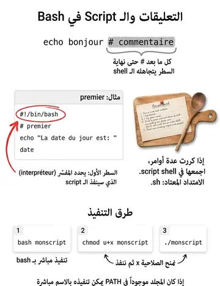

Les scripts shell
سكربتات الشيل
الشرح بالعربية
السكربت ملف نصي يحوي أوامر. السطر الأول #!/bin/bash (shebang) يحدد المفسر. التعليقات تبدأ بـ #. التفعيل: chmod u+x script ثم ./script، أو bash script. الامتداد .sh عرف وليس شرطًا. الأسماء بدون مسافات وحساسة لحالة الأحرف. جرّب الأمثلة مباشرة في الطرفية داخل الموقع.
Illustrations de la leçon
1 planche · cliquez pour agrandir
Contenu de la leçon
Le cours en français, avec les termes techniques et les exemples.
Un commentaire débute avec le caractère # et se termine avec la fin de la ligne. Un commentaire est ignoré par le shell.
Example :
$ echo bonjour # l'ami$ bonjour$ echo coucou #l' ami$ coucou# echo coucou
$
COMMENTAIRES
Lorsqu’un traitement nécessite l’exécution de plusieurs commandes, il est préférable de les sauvegarder dans un fichier plutôt que de les retaper au clavier chaque fois que le traitement doit être lancé.
Ce type de fichier est appelé fichier de commandes ou fichier shell ou encore script shell.
FICHIERS SHELL
Les shell scripts se terminent généralement par « .sh » pour le Bourne Shell et le Bourne Again Shell, par
« .ksh » pour le Korn Shell et par « .csh » pour le C Shell.
Pour lancer l’exécution d’un fichier shell, on peut utiliser la commande : bash
$ bash monscriptIl est plus simple de lancer l’exécution d’un programme shell en tapant directement son nom, comme on le ferait pour une commande unix ou une commande interne.
Pour que cela soit réalisable, deux conditions doivent être remplies :
l’utilisateur doit posséder les permissions r (lecture) et x (exécution) sur le fichier shell :
$ chmod u+x monscriptPour l'exécuter : $ ./monscript
Pour éviter le ./ le répertoire dans lequel se trouve le fichier shell doit être présent dans la liste des chemins
contenue dans PATH. :
$ PATH=$PATH:.
$ monscriptSTRUCTURE ET EXÉCUTION D'UN SCRIPT
Une ligne de commentaire commence toujours par le caractère « # ». Un commentaire peut être placé à la fin d'une ligne comportant déjà des commandes.
# La ligne suivante effectue un ls ls # La ligne en question
La première ligne à une importance particulière car elle permet de préciser quel shell va exécuter le script.
#!/bin/ sh#!/bin/kshDans le premier cas c'est un script Bourne, dans l'autre un script Korn
Dans notre cas on va utiliser le Bourne Again Shell
#!/bin/bashSTRUCTURE ET EXÉCUTION D'UN SCRIPT
Exercice :
A l’aide d’un éditeur de texte, créer un fichier premier contenant les lignes suivantes :
#!/bin/bash# premier echo "La date du jour est: "
DateLa notation #! en première ligne d'un fichier interprété précise au shell courant quel interpréteur doit être utilisé pour exécuter le programme (dans cet exemple, il s’agit de /bin/bash).
Vérifier le contenu de ce fichier.
Pour lancer l’exécution d’un fichier shell premier, on peut utiliser la commande : bash premier ou ./premier ou directement premier
Ex :
$ bash premierla date du jour est : jeudi 27 février 2014, 17:34:25 (UTC+0100)
$
STRUCTURE ET EXÉCUTION D'UN SCRIPT
Exercice :
Écrire un programme shell monscript1 qui affiche le nom de connexion de l'utilisateur et le chemin absolu de son répertoire courant de la
manière suivante :
Ex : $ monscript1 mon nom de connexion est : stagiaire mon repertoire courant est : /home/stagiaire
$